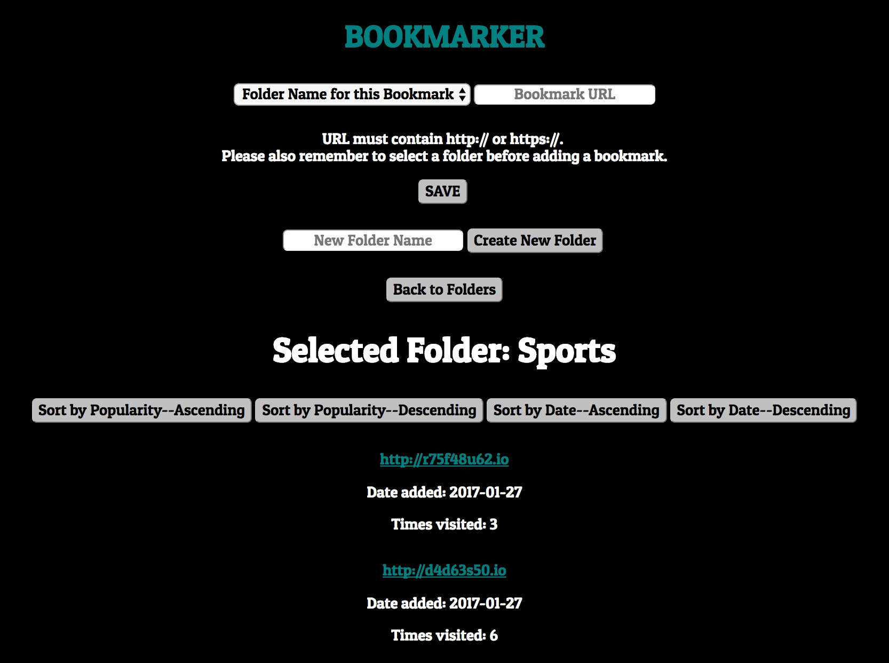
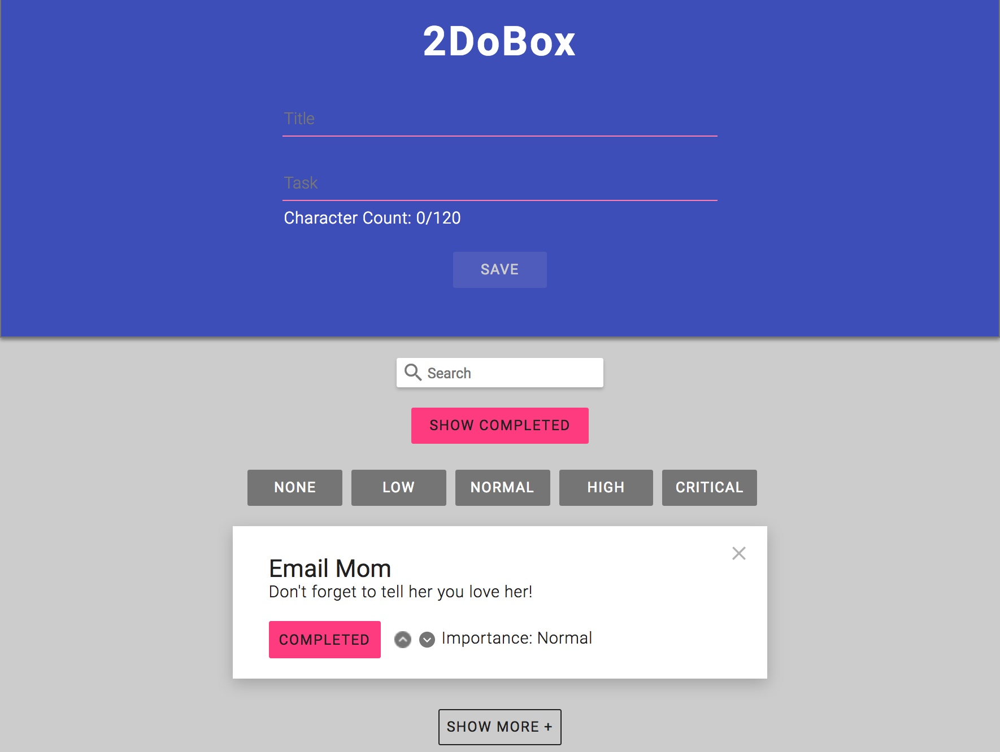
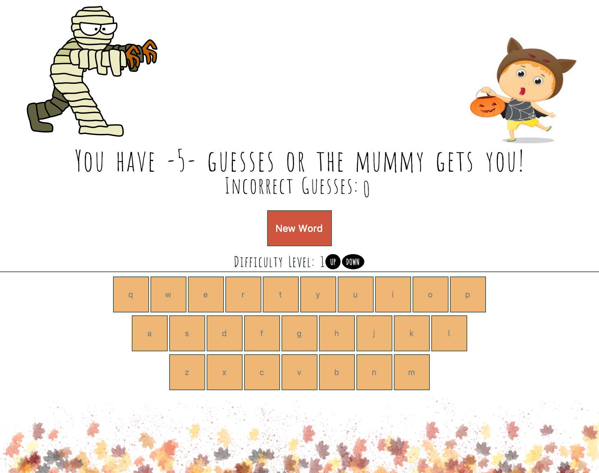

Weather Forecast
This simple weather app uses Google's geolocation API to find user's current location and access local weather. The user can also "Pin" or save certain cities. (Note: You must "Load unsafe scripts" in your browser for this app to run, because of the particular weather data API we were assigned to use.)
Technologies Used : React, Redux, Google Geolocation API, Jest
Nimble Network
NimbleNetwork is a basic contact management app, intended for use at networking events. It allows its user to collect a variety of contact information on new connections. Furthermore, you can save contacts of particular interest to a Follow-Up list.
Users sign in through Google, and their contacts are stored in a user-specific Google Firebase database.
Technologies Used : React, Google Firebase, Enzyme, SASS/SCSS
CanChaser
CanChaser was my personal project during my time at Turing. Competitive barrel racing is a major part of my life, and it's a major pain point for barrel racers to find information on events. This project is still a work in progress, but it allows competitors to search for races based on a number of criteria such as location, payout percentage, added money, and sanctioning organizations. A user can "favorite" events that they want to save. This app also allows event producers to list their events.
Technologies Used : React, Google Firebase, Enzyme
BookMarker

The BookMarker project was my first foray into back-end engineering. The design/UX/UI on this project is certainly some of my lowest quality, but the focus of this project was completely on engineering, not design. This app allows users to create a folder to hold bookmark links for various websites. When a user adds a bookmark link, a shortened URL is generated. The app notes the date the bookmark was added and keeps count of the number of times that link is clicked.
All of this information is held in a SQL database, accessed via Postgres.
Technologies Used : Node.js, Express, PostgreSQL, KNEX
2Do Box

This app is a simple task manager, allowing users to add tasks to a ToDo list, rank them by importance, and sort/filter/search accordingly.
Technologies Used : jQuery, SASS/SCSS, Selenium
Game Time - Hangman

The final project of the first module of the Front-End Engineering program at Turing is to build a logic-heavy game. My partner and I chose to build the classic game of Hangman. Because this game was built in the fall around Halloween, it is themed accordingly.